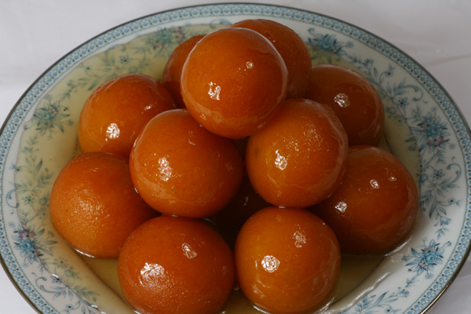

Gulab Jamun
It is a classic Indian sweet made with paneer, flour, sooji, and Nestlé MILKMAID. This
recipe shows you how to make soft Gulab Jamun at home by preparing a smooth dough with paneer and
Nestlé.
Ingredients
- 1 Nestle Milkmaid mini
- 1 kg sugar
- 200 gram flour
- 200 gram sooji
- 600 gram grated paneer
- 1½ tsp baking powder
- 1½ tsp baking soda
- Oil, for frying
- 2 litres water
- 6-8 nos coarsely crushed cardamom
Method
- In a bowl, add 200 grams of grated paneer, 200 grams of flour, 200 grams of sooji, 1½ tsp baking
powder, and 1½ tsp baking soda. Mix well.
- Add 1 Nestle Milkmaid mini to the mixture and knead it into a smooth dough.
- Divide the dough into small portions and shape them into smooth balls.
- Heat oil in a deep pan for frying the balls.
- Fry the balls on low-medium heat until they turn golden brown.
- In another pan, prepare sugar syrup by adding 1 kg sugar and 2 litres of water. Bring it to a
boil and add coarsely crushed cardamom.
- Once the sugar syrup is ready, add the fried balls to the syrup and let them soak for at least
30 minutes.
- Serve the Gulab Jamun warm or at room temperature.

Kaju Katli
Kaju katli is one of the most popular Indian sweets (mithai) that is made or bought for
the Diwali celebration. Here kaju=cashews and katli=thin slices. Even though the slices are not
thick like burfi pieces (fudge), it is also known as kaju barfi or burfi.
Ingredients
- 1 cup cashews
- 1/2 cup sugar
- 1/4 cup water
- 1/4 tsp cardamom powder
- 1 tsp ghee (clarified butter)
- Silver leaf (optional, for garnish)
Method
- Soak the cashews in water for 2-3 hours. Drain and grind them into a smooth paste.
- In a non-stick pan, combine sugar and water. Heat until the sugar dissolves completely and forms
a syrup.
- Add the cashew paste to the syrup and cook on low heat, stirring continuously until the mixture
thickens and starts to leave the sides of the pan.
- Add cardamom powder and ghee to the mixture and mix well.
- Transfer the mixture onto a greased plate and flatten it with a rolling pin to your desired
thickness.
- Allow it to cool slightly, then cut into diamond or square shapes. Optionally, garnish with
silver leaf.
- Let the kaju katli cool completely before serving or storing in an airtight container.

Rasgulla
Rasgulla is a popular Indian dessert made from chhena (Indian cottage cheese) and
semolina dough, cooked in sugar syrup. It is soft, spongy, and sweet, often served chilled.
Ingredients
- 1 litre full-fat milk
- 1-2 tbsp lemon juice or vinegar
- 1 cup sugar
- 4 cups water
- 1 tsp cardamom powder
Method
- Boil the milk in a pan. Once it comes to a boil, add lemon juice or vinegar to curdle the milk.
Stir gently until the whey separates.
- Strain the curdled milk using a muslin cloth or fine sieve to collect the chhena. Rinse it under
cold water to remove any lemon/vinegar taste.
- Squeeze out excess water from the chhena and knead it for a few minutes until smooth and soft.
- Divide the chhena into small portions and roll them into smooth balls, ensuring there are no
cracks.
- In a large pan, combine sugar and water to make sugar syrup. Bring it to a boil and add cardamom
powder.
- Gently add the chhena balls to the boiling sugar syrup. Cover and cook on medium heat for about
15-20 minutes, until the balls expand and become spongy.
- Remove from heat and let the rasgullas cool in the syrup. Serve chilled or at room temperature.

Doda Barfi
Doda Barfi is a traditional, rich Indian milk fudge originating from Punjab. Known for
its unique, chewy-grainy texture and deep caramelized flavor, it is primarily made from slow-cooked
milk solids (khoya), cracked wheat (daliya), ghee, sugar, and a generous amount of chopped dry
fruits.
Ingredients
- 1 cup cracked wheat (daliya)
- 1 cup khoya (milk solids)
- 1 cup sugar
- 1/2 cup ghee (clarified butter)
- 1/4 cup chopped dry fruits (almonds, cashews, pistachios)
- 1/2 tsp cardamom powder
Method
- Heat ghee in a heavy-bottomed pan and add the cracked wheat. Roast it on low heat until it turns
golden brown and releases a nutty aroma.
- Add the khoya to the roasted wheat and cook, stirring continuously, until the mixture is well
combined and starts to thicken.
- Add sugar and cardamom powder to the mixture, and continue to cook until the sugar dissolves and
the mixture thickens further.
- Stir in the chopped dry fruits and cook for another 2-3 minutes.
- Grease a plate or tray with ghee and pour the mixture onto it. Spread it evenly and allow it to
cool slightly.
- Once the mixture is firm enough, cut it into square or diamond-shaped pieces. Let it cool
completely before serving or storing in an airtight container.

Rasmalai
Rasmalai is a popular Indian dessert consisting of soft, spongy cheese balls (chhena)
soaked in sweet, flavored milk. It is often garnished with saffron and nuts, making it a rich and
indulgent treat.
Ingredients
- 1 litre full-fat milk
- 1-2 tbsp lemon juice or vinegar
- 1 cup sugar
- 4 cups water
- 1 tsp cardamom powder
Method
- Boil the milk in a pan. Once it comes to a boil, add lemon juice or vinegar to curdle the milk.
Stir gently until the whey separates.
- Strain the curdled milk using a muslin cloth or fine sieve to collect the chhena. Rinse it under
cold water to remove any lemon/vinegar taste.
- Squeeze out excess water from the chhena and knead it for a few minutes until smooth and soft.
- Divide the chhena into small portions and roll them into smooth balls, ensuring there are no
cracks.
- In a large pan, combine sugar and water to make sugar syrup. Bring it to a boil and add cardamom
powder.
- Gently add the chhena balls to the boiling sugar syrup. Cover and cook on medium heat for about
15-20 minutes, until the balls expand and become spongy.
- In another pan, boil 1 litre of milk and reduce it to half its quantity. Add sugar and cardamom
powder, and simmer for a few minutes until the milk thickens slightly.
- Remove the chhena balls from the sugar syrup and gently squeeze out excess syrup. Place them in
the thickened milk and let them soak for a few hours to absorb the flavors.
- Garnish with saffron strands and chopped nuts before serving. Serve chilled or at room
temperature.

Chocolate Barfi
Chocolate barfi is a rich fusion of traditional Indian milk fudge (barfi) and
chocolate. It is made by cooking reduced milk solids (mawa/khoya) or milk powder with sugar, cocoa
powder, and ghee until it forms a thick, fudgy consistency, then setting it in layers and garnishing
it with chopped nuts.
Ingredients
- 1 cup milk powder
- 1/2 cup cocoa powder
- 1/2 cup sugar
- 1/4 cup ghee (clarified butter)
- 1/4 cup milk
- 1/4 tsp cardamom powder
- Chopped nuts for garnish (optional)
Method
- In a non-stick pan, heat ghee on low heat. Add milk powder and cocoa powder, and roast for a
minute to remove any raw taste.
- Add sugar and milk to the pan, stirring continuously until the mixture thickens and starts to
leave the sides of the pan.
- Add cardamom powder and mix well. Continue to cook for another 2-3 minutes until the mixture
reaches a fudgy consistency.
- Grease a plate or tray with ghee and pour the mixture onto it. Spread it evenly and smooth the
surface with a spatula.
- Allow it to cool slightly, then cut into square or diamond-shaped pieces. Optionally, garnish
with chopped nuts.
- Let the chocolate barfi cool completely before serving or storing in an airtight container.

Jalebi
Jalebi is a beloved, spiral-shaped South Asian sweet made by deep-frying a fermented
flour batter in concentric circles and soaking them in warm sugar syrup. It is known for its
signature crispy, crunchy exterior and juicy, syrupy center.
Ingredients
- 1 cup all-purpose flour (maida)
- 2 tbsp chickpea flour (besan)
- 1/4 tsp baking powder
- 1/4 tsp turmeric powder (for color)
- 1/2 cup yogurt
- 1/2 cup water (adjust as needed)
- 1 cup sugar
- 1/2 cup water (for sugar syrup)
- 1/4 tsp cardamom powder
- A few saffron strands (optional)
- Oil or ghee, for deep frying
Method
- In a mixing bowl, combine all-purpose flour, chickpea flour, baking powder, and turmeric powder.
Mix well.
- Add yogurt and water to the dry ingredients, whisking until you get a smooth, thick batter.
Cover and let it ferment for 6-8 hours or overnight.
- In a separate pan, prepare the sugar syrup by combining sugar and water. Heat until the sugar
dissolves completely, then add cardamom powder and saffron strands. Keep the syrup warm.
- Heat oil or ghee in a deep frying pan over medium heat. Fill a piping bag or squeeze bottle with
the fermented batter.
- Pipe the batter into the hot oil in spiral shapes, starting from the center and moving outward.
Fry until golden and crisp, then remove and drain on paper towels.
- Immediately dip the fried jalebis into the warm sugar syrup for a few seconds, ensuring they are
well-coated. Remove and let excess syrup drip off.
- Serve the jalebis warm or at room temperature, enjoying their crispy texture and sweet, syrupy
flavor.

Mishti Doi
Mishti Doi is a traditional Bengali dessert made from sweetened, fermented yogurt. It
is known for its creamy texture and rich, caramelized flavor, often served chilled.
Ingredients
- 1 litre full-fat milk
- 1/2 cup sugar
- 2 tbsp plain yogurt (for fermentation)
Method
- Boil the milk in a heavy-bottomed pan, stirring occasionally to prevent it from sticking. Reduce
the milk to about half its original volume.
- Add sugar to the reduced milk and stir until it dissolves completely. Allow the milk to cool to
a lukewarm temperature.
- Once the milk is lukewarm, add the plain yogurt and mix well. Pour the mixture into a clay pot
or any container of your choice.
- Cover the container and let it sit in a warm place for 6-8 hours or until the yogurt sets and
thickens.
- Refrigerate the Mishti Doi for a few hours before serving. Enjoy it chilled, garnished with a
sprinkle of cardamom powder or saffron strands if desired.

Falooda
Falooda is a popular Indian dessert drink made with a combination of rose syrup,
vermicelli, sweet basil seeds, milk, and ice cream. It is known for its unique texture and
refreshing taste.
Ingredients
- 1/4 cup sweet basil seeds (sabja seeds)
- 1/4 cup vermicelli
- 2 cups milk
- 2-3 tbsp rose syrup
- 2 scoops vanilla or rose ice cream
- Chopped nuts and dried fruits for garnish (optional)
Method
- Soak the sweet basil seeds in water for about 30 minutes until they swell and become gelatinous.
Drain and set aside.
- Cook the vermicelli in boiling water until soft, then drain and rinse with cold water to stop
the cooking process. Set aside.
- In a separate pan, heat the milk until it is warm but not boiling. You can also sweeten the milk
with sugar if desired.
- Combine the soaked basil seeds, cooked vermicelli, and warm milk in a large bowl. Stir well to
mix all the ingredients.
- Add the rose syrup and ice cream to the mixture and stir gently until everything is well
combined.
- Serve the Falooda chilled in glasses, garnished with chopped nuts and dried fruits if desired.

Gajar Ka Halwa
Gajar ka halwa, also known as carrot pudding, is a traditional Indian dessert made from
grated carrots, milk, sugar, and ghee. It is flavored with cardamom and garnished with nuts, making
it a rich and indulgent treat.
Ingredients
- 4 cups grated carrots
- 4 cups full-fat milk
- 1 cup sugar
- 1/4 cup ghee (clarified butter)
- 1/2 tsp cardamom powder
- Chopped nuts for garnish (optional)
Method
- Heat ghee in a heavy-bottomed pan and add the grated carrots. Sauté the carrots for a few
minutes until they soften slightly.
- Add the full-fat milk and sugar to the pan and stir well to combine all the ingredients.
- Reduce the heat to low and let the mixture simmer for about 20-25 minutes, stirring occasionally
to prevent it from sticking.
- Once the halwa thickens, add the cardamom powder and stir well to incorporate.
- Remove from heat and let it cool slightly before serving. Garnish with chopped nuts if desired.

Kala Jamun
Kala Jamun is a popular Indian dessert made from khoya (reduced milk solids) and
deep-fried to a dark brown color. It is soaked in sugar syrup, giving it a rich, sweet flavor and a
soft, spongy texture.
Ingredients
- 1 cup khoya (reduced milk solids)
- 1/4 cup all-purpose flour (maida)
- 1/4 tsp baking soda
- 1 cup sugar
- 1 cup water
- 1/4 tsp cardamom powder
- Oil or ghee, for deep frying
Method
- In a mixing bowl, combine khoya, all-purpose flour, and baking soda. Knead the mixture into a
smooth dough.
- Divide the dough into small portions and roll them into smooth balls, ensuring there are no
cracks.
- Heat oil or ghee in a deep frying pan over medium heat. Fry the khoya balls until they turn dark
brown and are cooked through.
- In a separate pan, prepare the sugar syrup by combining sugar and water. Heat until the sugar
dissolves completely, then add cardamom powder.
- Once the fried khoya balls are ready, immerse them in the warm sugar syrup for at least 30
minutes to soak up the sweetness.
- Serve the Kala Jamun warm or at room temperature, garnished with chopped nuts if desired.

Kulfi
Kulfi is a traditional Indian frozen dessert made from thickened milk, sugar, and
various flavorings such as cardamom, saffron, or pistachios. It has a dense and creamy texture,
making it a popular treat during hot weather.
Ingredients
- 1 litre full-fat milk
- 1/2 cup sugar
- 1/4 tsp cardamom powder
- A few saffron strands (optional)
- Chopped pistachios or almonds for garnish (optional)
Method
- In a heavy-bottomed pan, bring the milk to a boil. Reduce the heat and simmer, stirring
occasionally, until the milk thickens to about half its original volume.
- Add sugar, cardamom powder, and saffron strands (if using) to the thickened milk. Stir well to
combine and cook for another 5-10 minutes.
- Remove the pan from heat and let the mixture cool to room temperature.
- Pour the cooled mixture into kulfi molds or small cups. Cover with foil or plastic wrap and
insert sticks if desired.
- Freeze the kulfi for at least 6-8 hours or until fully set.
- To serve, dip the molds in warm water for a few seconds to loosen the kulfi, then unmold onto
serving plates. Garnish with chopped pistachios or almonds if desired.

Besan Laddu
Besan Laddu is a popular Indian sweet made from gram flour (besan), sugar, and ghee. It
is shaped into round balls and often garnished with nuts and saffron.
Ingredients
- 1 cup besan (gram flour)
- 1/2 cup sugar
- 1/4 cup ghee (clarified butter)
- 1/4 tsp cardamom powder
- A few saffron strands (optional)
- Chopped nuts for garnish (optional)
Method
- In a mixing bowl, combine besan, sugar, and cardamom powder. Mix well.
- Add ghee and mix until the dough comes together.
- Divide the dough into small portions and roll them into smooth balls.
- Heat ghee in a deep frying pan over medium heat. Fry the besan balls until they turn golden
brown.
- Remove the fried balls from the pan and drain on paper towels.
- Garnish with chopped nuts and saffron strands if desired.

Milk Peda
Milk Peda is a traditional Indian sweet made from milk, sugar, and flavorings such as
cardamom or saffron. It has a soft, fudgy texture and is often shaped into small discs or balls.
Ingredients
- 1 litre full-fat milk
- 1/2 cup sugar
- 1/4 tsp cardamom powder
- A few saffron strands (optional)
- Chopped nuts for garnish (optional)
Method
- In a heavy-bottomed pan, bring the milk to a boil. Reduce the heat and simmer, stirring
occasionally, until the milk thickens to about half its original volume.
- Add sugar, cardamom powder, and saffron strands (if using) to the thickened milk. Stir well to
combine and cook for another 5-10 minutes.
- Remove the pan from heat and let the mixture cool slightly.
- Once the mixture is cool enough to handle, shape it into small discs or balls using your hands.
- Garnish with chopped nuts if desired.
- Allow the milk peda to set for a few hours before serving or storing in an airtight container.

Kheer
Kheer is a traditional Indian rice pudding made by boiling rice, broken wheat, or
vermicelli with milk and sugar. It is flavored with cardamom, saffron, and garnished with nuts and
raisins.
Ingredients
- 1/4 cup rice (or vermicelli)
- 1 litre full-fat milk
- 1/2 cup sugar
- 1/4 tsp cardamom powder
- A few saffron strands (optional)
- Chopped nuts and raisins for garnish (optional)
Method
- Rinse the rice (or vermicelli) thoroughly and soak it in water for about 30 minutes. Drain
before cooking.
- In a heavy-bottomed pan, bring the milk to a boil. Reduce the heat and add the soaked rice to
the milk. Cook on low heat, stirring occasionally, until the rice is fully cooked and the milk
thickens.
- Add sugar, cardamom powder, and saffron strands (if using) to the kheer. Stir well to combine
and cook for another 5-10 minutes until the sugar dissolves completely.
- Remove the pan from heat and let the kheer cool slightly. Garnish with chopped nuts and raisins
if desired.
- Serve the kheer warm or chilled, according to your preference.

Soan Papdi
Soan Papdi is a popular Indian sweet known for its flaky, melt-in-the-mouth texture. It
is made from gram flour, sugar, ghee, and flavored with cardamom and saffron.
Ingredients
- 1 cup gram flour (besan)
- 1 cup sugar
- 1/4 cup ghee (clarified butter)
- 1/4 tsp cardamom powder
- A few saffron strands (optional)
- Chopped nuts for garnish (optional)
Method
- In a non-stick pan, heat ghee on low heat. Add gram flour and roast it until it turns golden
brown and releases a nutty aroma.
- In a separate pan, prepare sugar syrup by combining sugar and a little water. Heat until the
sugar dissolves completely and reaches a one-string consistency.
- Gradually add the roasted gram flour to the sugar syrup, stirring continuously to avoid lumps.
- Add cardamom powder and saffron strands (if using) to the mixture and mix well.
- Pour the mixture onto a greased plate or tray and spread it evenly. Allow it to cool slightly
before cutting into square or diamond-shaped pieces.
- Garnish with chopped nuts if desired. Let the Soan Papdi cool completely before serving or
storing in an airtight container.

Balushahi
Balushahi is a popular Indian sweet. It is a deep-fried pastry made from flour, ghee,
and sugar, and is often served with rabri or kheer.
Ingredients
- 1 cup all-purpose flour
- 1/2 cup ghee (clarified butter)
- 1/2 cup sugar
- 1/4 cup milk
- 1/4 tsp cardamom powder
- A few saffron strands (optional)
Method
- In a mixing bowl, combine flour and ghee. Rub them together until the mixture resembles
breadcrumbs.
- Add sugar, milk, and cardamom powder to the mixture. Knead the dough until it comes together.
- Roll out the dough on a floured surface to about 1/4 inch thickness.
- Cut the dough into diamond or square shapes using a sharp knife or cookie cutter.
- Heat oil in a deep pan for deep frying. Fry the pieces until they turn golden brown on both
sides.
- Drain the fried Balushahi on paper towels and serve warm with rabri or kheer.